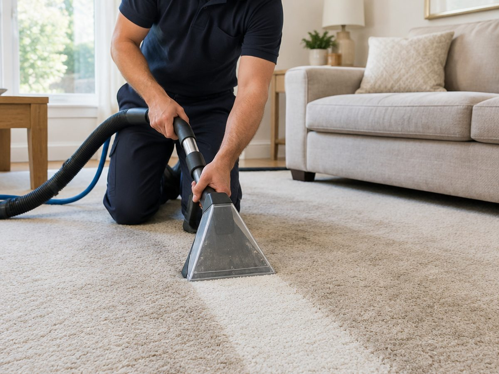
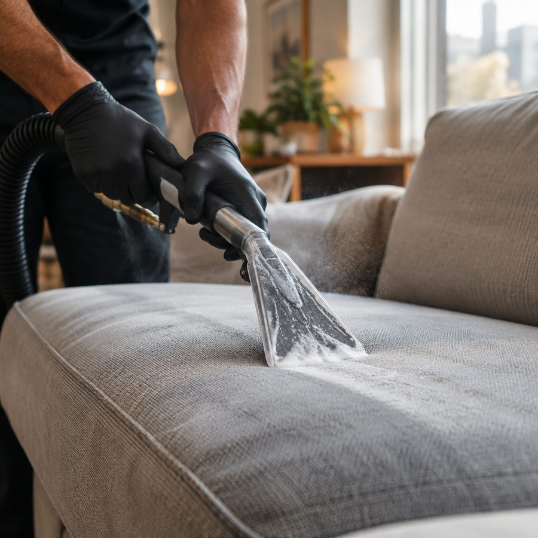

Химчистка мебели, ковров и залов
Мягкая мебель, ковры, комплекты стульев и мебель в заведениях. Чистим с выездом, цену называем по фото — до начала работ.
 01 · мягкая мебель
01 · мягкая мебельДиваны, кресла, стулья, матрасы
Самая частая задача. Чистим обивку целиком, а не отдельное пятно, чтобы не осталось «чистых островов» на фоне остального ворса.
- Диваны: прямые, угловые, модульные, с оттоманкой
- Кресла, пуфы, банкетки, изголовья кроватей
- Стулья и стулья-кресла с мягкой обивкой
- Матрасы: пыль, пылевые клещи, следы пролитого
- Пятна: кофе, вино, соки, косметика, следы животных
- Запахи: табак, животные, затхлость, кальян
Работаем с рогожкой, велюром, флоком, микрофиброй, шениллом и жаккардом. Кожу и экокожу чистим отдельными средствами.

02 · коврыКовёр чистим на месте
Не нужно везти ковёр через город: чистим на полу с вымыванием грязи из основания ворса. Песок и пыль вытягиваются, а не вбиваются глубже.
- Ковры с коротким и средним ворсом, без длинного ворса
- Ковролин в квартирах, офисах и залах
- Свежие и застарелые пятна, следы от обуви и животных
- Убираем запах и восстанавливаем вид ворса
Изделия из натурального шёлка и старинные ковры осматриваем отдельно: для них нужен другой режим, и решение принимаем после теста.

03 · комплекты и офисКогда предметов много
Комплект стульев после ремонта, мебель в переговорной, диваны в зоне ожидания. Считаем по количеству предметов и работаем блоками, чтобы не растягивать на несколько дней.
- Комплекты стульев и офисные кресла
- Диваны и банкетки в зонах ожидания
- Мебель после ремонта и переезда
- Обслуживание по графику для организаций
Что входит в цену и от чего она зависит
Предварительную стоимость называю по фото. Итог зависит от того, что вижу на месте, но сюрпризов «плюс столько-то» не будет.
Входит в работу
- Выезд по Минску и пригороду по договорённости
- Профессиональное оборудование и химия
- Тест средства на скрытом участке
- Сухая уборка, чистка и вымывание средства
- Уборка рабочего места после чистки
На что влияет цена
- Тип и размер предмета: диван, кресло, матрас, комплект
- Ткань: гладкая обивка дешевле, чем флок или велюр
- Степень загрязнения и возраст пятен
- Количество предметов — комплектом выгоднее
- Выезд в ночное время для заведений
Пришлите 2–3 фото и район — вернусь с ценой и свободным временем. Оплата после работы; для организаций возможен безналичный расчёт по договору.
Об услугах
Да, но по другой технологии: без экстрактора, специальными составами с последующим уходом. Сначала тест на незаметном участке — кожа ведёт себя иначе, чем ткань.
Можно, но чаще всего остаётся разница тонов: очищенный участок выглядит светлее остального. Поэтому предлагаю чистить целиком — результат ровнее и служит дольше.
Да. Для детских вещей подбираем средства мягче и тщательнее вымываем их экстрактором. После высыхания мебель можно использовать как обычно.
Посчитаем вашу мебель
Пришлите фото и район — назову стоимость и свободное время.
+375 (29) 501-76-04Записаться на чистку
Имя, телефон и что нужно почистить — перезвоню и назову цену.